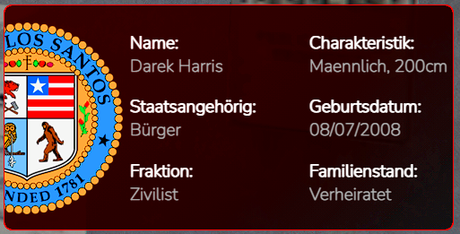

Liebes DLRP Server Team
Ich würde bei euch gerne als developer anfangen ich habe eine kleine bewerbung geschieben die ihr euch wenn ihr zeit habt vielleicht einmal durchlesen könntet
https://docs.google.com/docume…rp0ml8Rg/edit?usp=sharing
MFG
Darek
Beiträge von MPowers Sohn
-
-
Liebes DLRP-Server Team
Ich würde euch gerne im team helfen ich habe eine bewerbung geschrieben und hoffe sie gefällt euch
MFG
Darek
https://docs.google.com/docume…960WMWI4/edit?usp=sharing -
Ich was selber in der "Los Santos Vagos" Drinne und wollte sie wieder neu aufbauen das sie jetzt Aufgelöst wurde habe ich überlegt eine neue Familie zu gründen namens Los Santos Vagos
Ich habe ein konzept geschrieben und würde mich über eine gute nachicht freuen
MFG
Axyis
https://docs.google.com/docume…QSZC59T8/edit?usp=sharing -
Lieber Herr hammer ich wurde auf den Discord gebannt und habe ein entbannungs antrag geschrieben könnt noch ein wenig dauern
-
Hallo und Danke, dass ihr meine Bewerbung liest. Ich möchte mich beim Police Department bewerben.
Inhaltsverzeichnis:
1. IC
2. OOC
3. Warum?
4. Stärken + Schwächen
5. Lizenzen
6. Ziele
7. Dienstzeiten
8. Vorerfahrung
9. Schluss
10. Extra
1.
IC:
Ich bin Darek Harris und bin vor einigen Monaten in die Stadt gekommen.
Geboren bin ich in Las Vegas. Mein Leben bestand als ich klein war nur aus Luxusautos, Gold und Casino... Mein abscheulicher Vater,
konnte mir nie wirklich zur Seite stehen und keine Liebe schenken. Als ich dann mit 17 eine Party schmeißen wollte, erwischte ich mein
Vater, wie er meine Mutter betrog und fand heraus, dass er in kriminellen Machenschaften (wie Mord, Raub usw.) verwickelt ist.
Seitdem bin ich aus Las Vegas abgehauen und bin mir Sicher, dass ich die Kriminalität stoppen will. Außerdem
habe zu jedem den Kontakt getrennt, außer zu meiner Mutter, die letzten Sommer verstarb.
Naja, seitdem treibe ich mich in jeder Stadt mal rum. Los Santos eröffnet mir neue Türen und hier habe ich auch vor,
mir was aufzubauen. Angefangen habe ich als Verkäufer (Kaffee, Aluminium, Eisen, Trauben usw.). Irgendwann wollte ich ein
richtigen Job haben, weshalb ich zur MD Security wurde. Da dieser Job mir schnell langweilig wurde bin ich dann zum PD
gewechselt. Beim PD konnte ich den Rang Officer 1 erreichen und war 1 Monat als Officer eingestellt. Prüfung habe ich beim
ersten mal geschafft. Gekündigt habe ich dann am 24.11.2021 aufgrund von fehlender Zeit. Doch diese kam dann doch schneller als
erwartet, weshalb ich mich beim MD beworben habe, bis Lieutenant gekommen bin und dort Chirurg fertig ausgebildet war. Danach bin zum SD gegangen
und konnte da unter Duplos und Donatellos Leitung Rang 5 erreichen. Durch den Leitungswechsel, war ich dann kurzzeitig nicht im SD und wurde dann neu eingestellt
und war Rang 4, unteranderem habe ich die S.E.R.T geleitet und war auch Ausbilder. Dann war ich kurzzeitig bei den Osmanen, habe dort mir nichts zu Schulden kommen
lassen und will wieder für den Staat arbeiten und somit zum PD.
2.
OOC:
Ich bin Julian, 16 Jahre alt und lebe derzeit in MV. Geboren bin ich in einer Kleinstadt in MV, am 31.12.2005.
Derzeit gehe ich auf ein Gymnasium in die 10. Klasse und mache voraussichtlich mein Abitur 2024. In meiner Freizeit, spiele ich gerne
Fußball, treffe mich mit Freunden, reise gerne und viel und habe Spaß auf dem Darklife-Server, auf dem ich schon seit August aktiv spiele.
Außerdem, schraube ich gerne mal an PC´s rum. Auch in "Reallife" interessiere ich mich für die Polizeiarbeit und möchte auch da ein Praktikum machen.
Momentan arbeite ich an meinem Autoführerschein.
3.
Warum?
Ich möchte mich beim Police Department bewerben, weil ich für Recht und Ordnung in der Stadt sorgen will.
Ich hasse die Macht der Kriminalität und der Fraktionen. Durch die Fraktionen passieren viel zu viele schlimme
Dinge, wie Mord. Mord ist das schlimmste was es gibt, meiner Meinung nach. Mein Vater hat mich sehr geprägt,
durch die zahlreichen schlechten Dinge die er tat, worauf ich immer mehr Hass entwickelte und ich mir sicher war und
immer noch bin, dass ich durch die Umstände ziemlich ein ziemlich guter Polizist werde. Außerdem habe ich durch meinen
jetzigen Job, viel Erfahrungen mit kriminellen und weiß, wie ich mich in Situationen zu verhalten habe. Deshalb eigne
ich mich gut für den Job als Polizeibeamter
Ich möchte den Menschen auf unserem Staat helfen und schützen, vor der noch zu starken Kriminalität und
zu mächtigen Fraktionen. Durch meine gute Kommunikation, muss bei Straftaten nicht direkt zur Waffe
gegriffen werden, sondern kann mit Worten schon meist geklärt werden.
4.
Stärken:
Ehrgeizig
Zuverlässigkeit
Teamfähig
Schwächen:
schnell genervt
Anfangs schüchtern, legt sich jedoch schnell
Dickköpfig
5.
Lizenzen:
Auto-Lizenz
Motorrad-Lizenz
Fluglizenz
EHK-Schein
6.
Ziele:
Ich will auf jeden Fall, dass die Kriminalität in der Stadt abnimmt und
dass die Fraktionen nicht mehr so viel "Macht" haben. Vor allem MUSS
Mord gestoppt werden. Außerdem,
möchte ich ein angesehener "Cop" werden.
7.
Dienstzeiten:
Ich bin relativ "Dehnbar".
Sonst aber: Jeden Tag, Zeit ist viel da.
Wenn ich nicht kann, melde ich mich natürlich ab.
8.
Vorerfahurng:
MD Security
PD Officer 1
MD Lieutenant
SD Master Sergeant (5)
9.
Schluss
Zum Schluss, möchte ich mich nochmal bedanken, dass Sie sich die Zeit genommen haben,
meine Bewerbung zu lesen und mich evtl. sogar in Betracht ziehen ein Bewerbungsgespräch
zu führen.
10.
Extra
Ich würde sehr gerne nicht wieder als Rekrut anfangen, bzw. nicht wieder alles von neu machen,
wenn es jedoch nötig ist, bin ich auch für ein drittes mal bereit die Prüfung zu machen.
Kontaktdaten:
Discord: 𝓖𝓔𝓡 │♛ᗩ𝓧Ｙ𝖎Ｓ♛#0001
IC: 123456789
Hochachtungsvoll
- Julian
-
Wo wurdest du gebannt?
Auf dem server DLRP(FiveM)
Wann wurdest du gebannt?
Gestern Abend
Wer hat dich gebannt?
cHaOs GiRl Im auftrag Manfred
Wie lange wurdest du gebannt?
5 Tage
Mit welchem Grund wurdest du gebannt?
Dritt Patai, RDM
Was ist vorgefallen?
Ich habe Personen abgestochen, weil ich einen Call bekommen habe : “Verpiss dich oder ich schepper dich”. es wurde nicht durch gefunkt und daraufhin wussten die anderen nicht, dass ich einen call bekommen habe. Ich bin daraufhin zu seiner Freundin gelaufen und habe sie aufgestochen.
Warum willst du entbannt werden?
weil der Server an sich richtig geil ich außer einige spieler aber der Server ist geil das Team ist voll nett und ich habe 230€ gespendet und will die halt nicht verlieren es wird auch nie wieder vorkommen und ich werde mich jetzt noch mehr darauf achten, dass sowas nicht passiert ich hoffe ich bekomme nochmal eine chance
Steam name:LC | 𝒥𝓊𝓁𝒾𝒶𝓃
Discord name:𝓖𝓔𝓡 │♛ᗩ𝓧Ｙ𝖎Ｓ♛#4207
-

Mein alter wird noch geändret auf 08/07/2000
-
Hallo und Danke, dass ihr meine Bewerbung liest. Ich möchte mich beim Police Department bewerben.
Inhaltsverzeichnis:
1. IC
2. OOC
3. Warum?
4. Stärken + Schwächen
5. Lizenzen
6. Ziele
7. Dienstzeiten
8. Vorerfahrung
9. Schluss
10. Extra
1.
IC:
Ich bin Darek Harris und bin vor einigen Monaten in die Stadt gekommen.
Geboren bin ich in Las Vegas. Mein Leben bestand als ich klein war nur aus Luxusautos, Gold und Casino... Mein abscheulicher Vater,
konnte mir nie wirklich zur Seite stehen und keine Liebe schenken. Als ich dann mit 17 eine Party schmeißen wollte, erwischte ich mein
Vater, wie er meine Mutter betrog und fand heraus, dass er in kriminellen Machenschaften (wie Mord, Raub usw.) verwickelt ist.
Seitdem bin ich aus Las Vegas abgehauen und bin mir Sicher, dass ich die Kriminalität stoppen will. Außerdem
habe zu jedem den Kontakt getrennt, außer zu meiner Mutter, die letzten Sommer verstarb.
Naja, seitdem treibe ich mich in jeder Stadt mal rum. Los Santos eröffnet mir neue Türen und hier habe ich auch vor,
mir was aufzubauen. Angefangen habe ich als Verkäufer (Kaffee, Aluminium, Eisen, Trauben usw.). Irgendwann wollte ich ein
richtigen Job haben, weshalb ich zur MD Security wurde. Da dieser Job mir schnell langweilig wurde bin ich dann zum PD
gewechselt. Beim PD konnte ich den Rang Officer 1 erreichen und war 1 Monat als Officer eingestellt. Prüfung habe ich beim
ersten mal geschafft. Gekündigt habe ich dann am 24.11.2021 aufgrund von fehlender Zeit. Doch diese kam dann doch schneller als
erwartet, weshalb ich mich beim MD beworben habe, bis Lieutenant gekommen bin und dort Chirurg fertig ausgebildet war. Danach bin zum SD gegangen
und konnte da unter Duplos und Donatellos Leitung Rang 5 erreichen. Durch den Leitungswechsel, war ich dann kurzzeitig nicht im SD und wurde dann neu eingestellt
und war Rang 4, unteranderem habe ich die S.E.R.T geleitet und war auch Ausbilder. Dann war ich kurzzeitig bei den Osmanen, habe dort mir nichts zu Schulden kommen
lassen und will wieder für den Staat arbeiten und somit zum PD.
2.
OOC:
Ich bin Julian, 16 Jahre alt und lebe derzeit in MV. Geboren bin ich in einer Kleinstadt in MV, am 31.12.2005.
Derzeit gehe ich auf ein Gymnasium in die 10. Klasse und mache voraussichtlich mein Abitur 2024. In meiner Freizeit, spiele ich gerne
Fußball, treffe mich mit Freunden, reise gerne und viel und habe Spaß auf dem Darklife-Server, auf dem ich schon seit August aktiv spiele.
Außerdem, schraube ich gerne mal an PC´s rum. Auch in "Reallife" interessiere ich mich für die Polizeiarbeit und möchte auch da ein Praktikum machen.
Momentan arbeite ich an meinem Autoführerschein.
3.
Warum?
Ich möchte mich beim Police Department bewerben, weil ich für Recht und Ordnung in der Stadt sorgen will.
Ich hasse die Macht der Kriminalität und der Fraktionen. Durch die Fraktionen passieren viel zu viele schlimme
Dinge, wie Mord. Mord ist das schlimmste was es gibt, meiner Meinung nach. Mein Vater hat mich sehr geprägt,
durch die zahlreichen schlechten Dinge die er tat, worauf ich immer mehr Hass entwickelte und ich mir sicher war und
immer noch bin, dass ich durch die Umstände ziemlich ein ziemlich guter Polizist werde. Außerdem habe ich durch meinen
jetzigen Job, viel Erfahrungen mit kriminellen und weiß, wie ich mich in Situationen zu verhalten habe. Deshalb eigne
ich mich gut für den Job als Polizeibeamter
Ich möchte den Menschen auf unserem Staat helfen und schützen, vor der noch zu starken Kriminalität und
zu mächtigen Fraktionen. Durch meine gute Kommunikation, muss bei Straftaten nicht direkt zur Waffe
gegriffen werden, sondern kann mit Worten schon meist geklärt werden.
4.
Stärken:
Ehrgeizig
Zuverlässigkeit
Teamfähig
Schwächen:
schnell genervt
Anfangs schüchtern, legt sich jedoch schnell
Dickköpfig
5.
Lizenzen:
Auto-Lizenz
Motorrad-Lizenz
Fluglizenz
EHK-Schein
6.
Ziele:
Ich will auf jeden Fall, dass die Kriminalität in der Stadt abnimmt und
dass die Fraktionen nicht mehr so viel "Macht" haben. Vor allem MUSS
Mord gestoppt werden. Außerdem,
möchte ich ein angesehener "Cop" werden.
7.
Dienstzeiten:
Ich bin relativ "Dehnbar".
Sonst aber: Jeden Tag, Zeit ist viel da.
Wenn ich nicht kann, melde ich mich natürlich ab.
8.
Vorerfahurng:
MD Security
PD Officer 1
MD Lieutenant
SD Master Sergeant (5)
9.
Schluss
Zum Schluss, möchte ich mich nochmal bedanken, dass Sie sich die Zeit genommen haben,
meine Bewerbung zu lesen und mich evtl. sogar in Betracht ziehen ein Bewerbungsgespräch
zu führen.
10.
Extra
Ich würde sehr gerne nicht wieder als Rekrut anfangen, bzw. nicht wieder alles von neu machen,
wenn es jedoch nötig ist, bin ich auch für ein drittes mal bereit die Prüfung zu machen.
Kontaktdaten:
Discord: 𝓖𝓔𝓡 │♛ᗩ𝓧Ｙ𝖎Ｓ♛#0001
IC: 123456789
Hochachtungsvoll
- Julian
-
Liebes LSPD ich würde mich gerne bei ihnen bewerben ich hoffe ich habt spaß beim lesen
MFG
Julian
https://docs.google.com/docume…cGKDKuPo/edit?usp=sharing -
Allgemeine Informationen
1. Reallife Name: Julian
2. Alter 17
3. Durchschnittliche Onlinezeit : 10-14 Stunden
4. Discordname: 𝓖𝓔𝓡 │♛ᗩ𝓧Ｙ𝖎Ｓ♛#0001
5. Nickname IC: Darek Harris
Zusätzliche Informationen
1. Für welche Organisation bewerben Sie sich als Leader?
The Grove Street Families
2. Warum wollen Sie Leader dieser speziellen Organisation werden?
Da ich mich in der Lage sehe gut mit Menschen zu kommunizieren bevor ich zur Waffe greife und immer die mündliche Lösung bevorzuge zusätzlich finde ich das ein sehr belastbarer Mensch bin und immer einen kühlen Kopf bewahre.
3. Welche Vorschläge zur Verbesserung des Roleplays trägt Ihre Organisation, welches Ziel streben Sie an?
Da ich persönlich das Gefühl habe dass aktuell das Ghetto eine Purge Zone ist muss dies unbedingt unterbunden werden und dies will ich fördern mit RP.
Meiner Meinung nach gehören noch die div. Geschäfte (Drogen, Waffen, Schutz etc.) zwischen den "Gangstern" auf Roleplay Ebene gefördert, was ich auch in angriff nehmen würde.
4. Existieren bereits Personen die mit einem höheren Rang eingeladen werden? (Stellvertreter/in oder niedriger)
Ja ich habe bereits RP fähige Personen an meiner Seite die mich bei diesem Projekt unterstützen
6. Haben Sie bereits Erfahrung mit der Gestaltung und Pflegen eines Forumsbereiches?
Ich kenne mich mit Führung aus was Forum Inhalte, instand Haltung von Foren und Konzept betrifft
7. Haben Sie die Regeln für Leader gelesen und stimmen diesen zu?
Ich habe mich mit den Regeln vertraut gemacht und stimme ihnen voll und ganz zu.
Zusätzlich müsste ich noch erwähnen:
Ich achte und lege besonders viel wert auf..
RP
Durchsetzung des Regelwerkes
Kommunikation zwischen den einzelnen Parteien
Kein Trash oder OOC Talk
IC Geschichte
Wie Ich als junge Meine Eltern verlor, wuchs ich in den Straßen von Los Santos auf, um genauer zu werden in der South Side. Als ihn die Jugend zeichnete von Gewalt, Drogen und fast täglichen Drive Bys verlor Ich ein stück Meiner Menschlichkeit. Durch den Einstieg in die Familie der Black Mafia als Vize unter Dean Blunt und den posten als Baby OG bei Maxes Blunt in der Blood Street Gang die er sich schwer erarbeiten musste.
Seine Wurzeln lagen bei der Groove Street da sein Vater einst ein teil dieser war. Er war vielleicht jung, bekam aber in der Erziehung sehr viel mit... Somit war es beschlossen, er wollte die Grove wieder Groß machen um den kompletten Markt wieder an die Spitze zu treiben, ob im Handel mit anderen Gangs, oder im Krieg mit anderen Gangs!
Schlusssatz
Wenn ihr mir die Chance gebt die Grove Street Families zu leiten werde ich mein bestes geben das Roleplay im allgemeinen zu verbessern.
Ich verbleibe mit freundlichen grüßen Axyis
-
Meine Bewerbung fürs LSPD
________________________________________________________________________________________________________________
Sehr geehrtes LSPD, hiermit sende ich Ihnen meine Bewerbung für LSPD.
Ich wünsche viel Spaß beim lesen.
________________________________________________________________________________________________________________
Meine Bewerbung fürs LSPD
Mein Name ist Darek Harris und ich möchte mich als Pdler bewerben um den Bürgern von Los Santos zu helfen und Dienst zu erweisen.
Gliederung:
1. OOC Informationen
2. IC Informationen
3. Meine Vorerfahrung
4. Warum ich Polizist werden möchte
5. Meine Schwächen und Stärken
6. Wie oft ich da bin
7. Wieso ich?
8. Mein Abschlusswort + Daten
OOC Informationen:
Guten Tag mein Name ist Julian bin 17 Jahre alt und wohne in Deutschland besser gesagt in Mecklenburg-Vorpormman.
Ich helfe ich Personen gerne und bin generell ein sehr hilfsbereiter Mensch.
In meiner Freizeit spiele ich gerne Fußball und zocke leidenschaftlich. Mit Freunden treffe ich mich auch fast Täglich.
IC Informationen:
Schönen guten Tag,
mein Name ist Darek Harris und ich bin am 08.07.2000 in Deutschland geboren.
Ich wuchs in einem relativ schlechtem Verhältnis mit meinen beiden Geschwistern und meinem Alkoholabhängigen Vater in Ingolstadt auf.
Meine Mutter kam damals leider bei einem starken Autounfall ums leben und ich musste mich von klein auf um meine beiden jüngeren Geschwister kümmern, da mein Vater den ganzen Tag in Bars oder Kneipen war und er erst Nachts oder gar nicht ,sturzbetrunken , nach Hause kam. Trotz der Situation und meines Umfeldes wollte ich schon damals Polizist werden weil ich für eine bessere Welt gegen Kriminalität kämpfen wollte .Außerdem wollte ich gutes Geld verdienen um meinen Kindern eine bessere Zukunft zu schenken. Meine Leistungen in der Schule waren auch relativ gut und ich trat als Kind bei vielen AGs oder Kursen teil.
Doch eines Tages klingelte das Jugendamt bei uns und erklärte uns das mein Vater wegen eines Mordes eine Lebenslängliche Haftstrafe bekommen hatte ,zu diesem Zeitpunkt war ich gerade einmal 14 Jahre alt und meine Bruder 16 .
Wir wurden dann vom Jugendamt getrennt und ich kam nach Los Santos in ein Heim . Meine Geschwister, meine Freunde , aufeinmal war alles weg und ich war komplett auf mich alleine gestellt.
In der Schule wurde ich gemobbt und meine Noten wurden immer schlechter . Mit der Zeit wurde ich immer depressiver und mein einziger Ausweg waren die Drogen.
Von dort an wurde mein Leben immer schlimmer. Ich lernte falsche Freunde kennen trat in Kriminellen Banden bei und und ich wurde zu dem Menschen vor dem ich mich als Kind immer gefürchtet habe.
Als ich dann vor 3 Jahren bei einem Bankraub mit meiner alten Gang erwischt und 2 Jahre ins Gefängnis kam dachte ich über meine Situation und mein Leben nach .
Mir wurde bewusst das ich nicht der Mensch bin der ich eigentlich bin und mir wurde auch bewusst das meine Zukunft nicht so weitergehen kann.
Ich erinnerte mich an meinen damaligen Traum, Polizist zu werden und für Gerechtigkeit zu sorgen .Ich wollte immer den Menschen helfen die so in ihrer Kindheit aufgewachsen sind wie ich.
In diesen 2 Jahren Gefängnis wurde ich wieder langsam aber sicher zu einem bodenständigen Mann .
Nun bin ich seit einem Jahr aus dem Gefängnis raus und habe mein Abitur nachgeholt . Ich möchte als Polizist arbeiten und mich für eine gute Zukunft für mich meinen Mitmenschen und meinen Kindern einsetzen .
Meine Vorerfahrung:
Ich habe sehr viel Erfahrung im Bereich PD.
Warum ich Polizist werden möchte? :
Wie schon in meiner Geschichte beschrieben möchte ich gerne für Recht und Ordnung sorgen und den Menschen helfen die es in der Kindheit und in ihrer Vergangenheit schwer hatten.
Meine Schwächen und Stärken:
Meine Stärken:
-Ich bin Hilfsbereit
-Ich gebe nie auf
-ich bin Teamfähig
-ich bin Zuverlässig, Zielstrebig
Meine Schwächen:
- Manchmal eher zurückhaltend
- Kann mir schlecht Sachen merken
Meine Online Zeiten:
Täglich 8-12 stunden
Diese Online Zeiten sollte ich in der Regel einhalten können falls nicht melde ich mich für den tag oder die Stunde ab.
Warum man mich nehmen sollte:
Ich sehe mich selbst sehr diszipliniert und das möchte ihnen auch gerne unter Beweis stellen. Ich bin sehr Teamfähig und stets bemüht.
Schlussworte:
Vielen Dank dass sie sich die Zeit nahmen meine Bewerbung zu lesen. Ich würde mich sehr über eine positive Rückmeldung freuen.
Mit freundlichen Grüßen
Darek Harris
Kontaktmöglichkeiten:
DC: 𝓖𝓔𝓡 │♛ᗩ𝓧Ｙ𝖎Ｓ♛#0001
_________________________________________________________________________________________________________________
LG Julian

-
Liebens DLRP team ich würde gerne die grove übernehmen
hier ist mein konzept:
https://docs.google.com/docume…BNonjm-o/edit?usp=sharing -
Team bewerbung für den server DLRPMeine Team bewerbung als support Bei euch[DLRP] erstmal über mich: Ich bin julian 16 jahre alt und komme aus Mecklenburg-vorpommern Ich helfe gerne Leuten,…docs.google.com
-
Wo wurdest du gebannt?
Auf dem server DLRP(FiveM)
Wann wurdest du gebannt?
vor ungefähr einer woche
Wer hat dich gebannt?
Yookie Im auftrag von peter
Wie lange wurdest du gebannt?
Permanent
Mit welchem grund wurdest du gebannt?
Fail RP,Vergewaltigung,safezone missachtet
was ist vorgefallen?
ich habe am MP eine frau bedroht und sie gefesselt dann hab ich sie getragen in meine auto und mein kollege hat geschrien vergewaltigt die schlampe darauf hin bin ich mit ihr weg gefahren und mein kollege ist mit gekommen dann wurde sie gezwungen die hose aus zu ziehen aber ich hab sie nur bedroht und mein kollege hat sie halt vergewaltigt.
Warum willst du entbannt werden?
weil der server an sich richtig geil ich außer einige spieler aber der server ist geil das team ist voll nett und ich habe 70€ gespendet und will die halt nicht verlieren es wird auch nie wieder vorkommen und ich werde mich jetzt noch mehr darauf achten dass sowas nicht passiert.
Steam name:Axyis
Discord name:𝓖𝓔𝓡 │♛ᗩ𝓧Ｙ𝖎Ｓ♛#4207
ich hoffe ich bekomme nochmal eine chance
MFG
Axyis